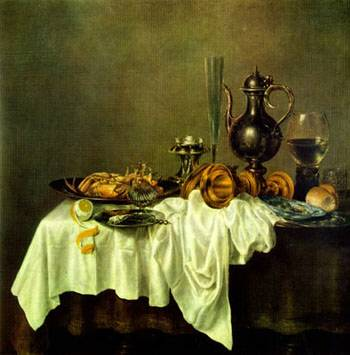

Kiddushin 22 - Hebrew Servant Stays Forever Because Life is Good

--> A Hebrew servant who likes life with his master and with his Canaanite slave-woman mate may stay with his master "forever," if he insists on it, which practically means until the Jubilee year. In court, the master bores his ear against the door with an awl, as an act of acquisition.
A Hebrew servant should be given food and wine better than his master's, and a better bed, because the Torah says, "it is good for him with you." The master also supports the servant's wife and children that the servant had before his servitude.